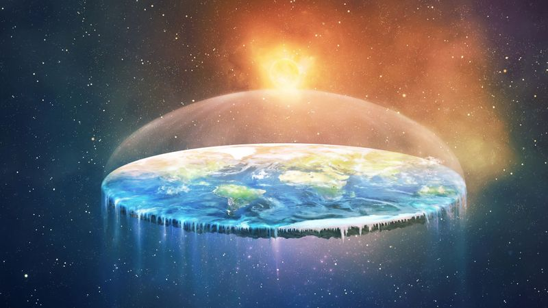
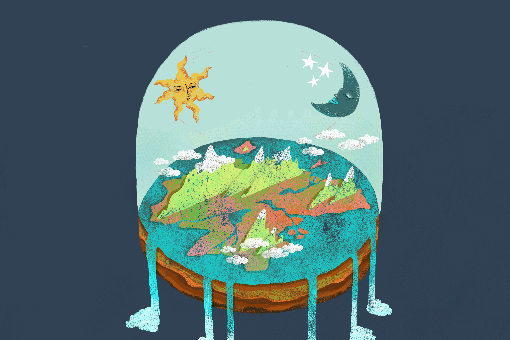
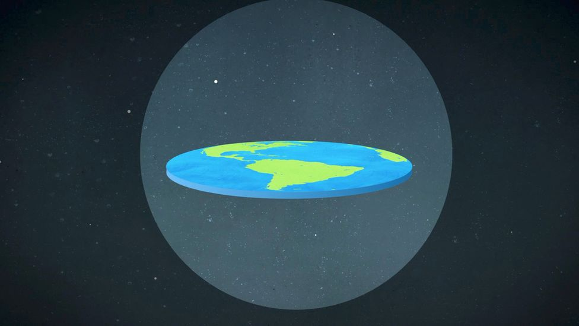

- 
- 
- 
Comme vous pouvez l'observer sur ces images, la Terre est plate et est entouré d'un immense mur de glace,l'Antartique. Sans ça il n'y aurais pas d'océan, naturellement.
Deplus, les plus observateur d'entre vous ont probalement remarqué la Terre ne tourne pas autour du Soleil.
Mais c'est belle est bien le Soleil qui voyage autour de la Terre, dessinant un anneaux au dessus de cette dernière.
Si vous étez un érudit de l'Astrophysique (science de la physique des astres), vous devais probablement connaître le terme de "Gravité", et vous vous demander comment les "Flat earther" l'explique.
Pour ce qui ne connaisser pas le terme, voici la page Wikipédia sur le sujet.
Si vous avez lu la page, félicitation. Vous voilà un expert au yeux de la "Flat Eart Society"
Vous savez maintenant qu'il y à une façon de générer un effet de gravité relative, il suffit d'accélérer de façon verticale (aller vers le haut)
pour que l'inertie causé nous garde collé au sol avec une force égale à 9.8 Newtons par kilo de masse.
C'est grace à cette idée que les "Flat Earter" explique l'idée de gravité. Nous somme donc en perpétuelle accélerations depuis la création de la planet, donc depuis 4,543 milliards d'années.
La vitesse à la quelle nous nous déplacons aujourd'hui serais de plus de 1,3847936256*10^18 m.s^-1 .
Ce qui est plus de 4.6 millons de fois plus rapide que la lumière. Pour les neophytes, nous allons trés vite.
Si vous n'étez toujours pas convaincu, voici un documentaire présenter par "ABCNews" sur la convention de 2017 des "Flat Earther", avec des invités tel que :
| "Flat Earther" | "Flat Earther" | Non "Flat Earther" |
| Mark Sargent | Rob Skiba | Mike Massimino |
| Auteur | Influanceur | Ancien Astronaut de la Nasa |
 |
 |
 |